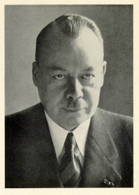

|  |
Reiter's syndrome = The classic triad consists of conjunctivitis, urethritis, and arthritis; other characteristic features include heel pain, skin and mucous membrane lesions, and bone changes. This condition typically affects young men who are HLA B 27 positive.
Hans Conrad Julius Reiter was born in Leipzig, the son of an industrialist. He studied medicine first at Leipzig, then Breslau (Wroclaw) and finally Tübingen, receiving his doctorate on the topic of nephritis and tuberculosis. Reiter then received further education at the hygienical institute in Berlin, the Pasteur Institute in Paris, and at St. Mary’s Hospital in London, where he worked with Sir Almroth Wright for two years. He was subsequently assistant physician in the lung clinic of the University of Berlin, until in 1913 he became Privatdozent in the institute of hygiene at Königsberg. Just before the 1st World War he was appointed deputy director of the institute of hygiene at the University of Berlin.
During four years of World War I Reiter was a military physician, both on the western front and in Balkan. He was 35 years old and served in the 1st Hungarian army, when he observed the disease picture which has later been associated with his name.
In 1918, after World War I, Reiter was appointed chief of department at the hygienical institute in Rostock, in 1928 first associate professor with teaching duties in social hygiene, and the same year honorary professor. Being politically interested, Hans Reiter was a supporter of the Nazi regime. It did not hurt his career that already in 1932 he signed an oath of allegiance to Adolf Hitler. In 1933 he was made department director of the Kaiser Wilhelm Institute of Experimental Therapy in Berlin-Dahlem. In 1936 he was made director of the health department of the state of Mecklenburg-Schwerin, and later received an honorary professorship in Berlin.
With Johann Breger he wrote a well-known book on racial hygiene, Deutsches Gold. Gesundes Leben - frohes Schaffen.
Reiter was an outstanding lecturer who enjoyed great popularity among his students. His reputation reached far outside Germany, and despite his enthusiastic support for nazism, he was accorded a number of honours overseas, including corresponding member of The Royal Society of Medicine i London.
Hans Reiter was also a highly vital elderly gentleman. At the age of 80 he lectured at international congresses on rheumatology. After his retirement he lived on his country estate in Hessen until his death in 1969.
Whilst serving on the western front Reiter was the first to identify the spirochete causing Weil’s disease. He also isolated a non-pathogenic variety of Treponema pallidum. This variant supplied many laboratories throughout the world with the antigen used in Reiter’s complement fixation test for syphilis.
Reiter and his disease
Over the years different variations of the disease picture in Reiter
disease have been described by a number of authors who have applied almost
a hundred synonyms. Urethritis in association with arthritis was described
as early as in the 16th century, and the term polyartrithis enterica was
introduced in the latter half of the 19th century. The first to describe
the complete triad was the English surgeon Sir Benjamin Collins Brodie
(1783-1862). He included five cases in his textbook Pathological and Surgical
Observations on Diseases of the Joints (London, 1818). All Brodie’s patients
were men.
In 1916 the condition was described independently of Reiter by Fiessinger and Leroy. In 1941, 25 years after his original description, Hans Reiter – in all modesty – refers to the condition as Reiter’s syndrome. In French literature, however, the term Fiessinger and Leroy syndrome, or Fiessinger-Leroy-Reiter syndrome is used.
Reiter reported a young lieutenant who was admitted to the Reservelasarett X on October 14, 1916. The patient was acutely ill with high fever and bloody diarrhoea, and developed urethritis, arthritis, and conjunctivitis. After venous puncture spirochetes were demonstrated in pure culture, and Reiter first thought it was spirochaetal in origin, but revised his opinion later. He described the case that year in Deutsche medizinische Wochenschrift under the title of Eine bisher unbekannte Spirochäteninfektion (Spirochaetosis arthritica).
Reiter himself did not consider the case a great rarity, writing: There is reason to believe that many similar disease cases have occurred and that they are spread all over the country.
Bibliography: